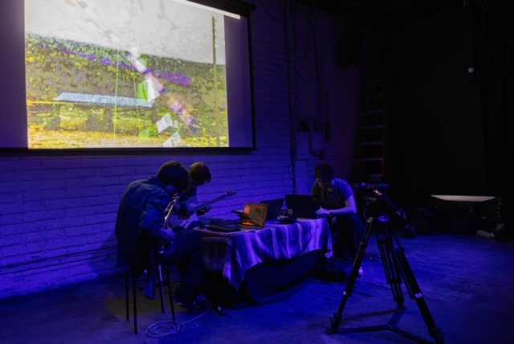

TouchDesigner is a node-based creative coding platform for building real-time interactive multimedia projects.
I use TouchDesigner to create audioreactive visualizers and procedural motion design.
In March 2026, I VJed for Warbler Ensemble at Coaxial Arts Foundation. Graphic and audioreactive visualizer were created in TouchDesigner.
In December 2025, I used TouchDesigner to build a soundscape of Los Angeles from field recordings and a virtual MIDI controlled by live traffic cam data.
I also frequently use TouchDesigner in conjunction with Strudel, combining procedural visuals with programmatic music.
